교통기사 (2014-05-25 기출문제)
1과목: 교통계획
1. 교통수요관리방안(TDM)으로 적합하지 않은 것은?
- 근무스케줄 단축
- 주차공간 공급 확대
- 출ㆍ퇴근 시간 조정
- 도심통행료 부과
(정답률: 89%)

2. P요소법에 대한 설명으로 틀린 것은?
- 차량의 평균승차인원을 고려하여 주차수요를 추정한다.
- 주차수요결정에 필요한 각종 요소를 얻을 수 있는 경우 적합한 방법이다.
- 원단위법에 비하여 여러 가지 지역 특성을 포괄적으로 고려하지 못하는 단점이 있다.
- 지구나 도심지와 같은 특정한 장소의 주차수요 예측에 적합하다.
(정답률: 92%)
3. 단기교통계획에 비하여 장기교통계획이 갖는 특징으로 옳은 것은?
- 시설지향적
- 저자본비용
- 다수의 대안
- 서비스 지향적
(정답률: 89%)
4. 폐쇄선 설정 시 고려할 사항이 아닌 것은?
- 폐쇄선을 횡단하는 도로는 가능한 많아야 한다.
- 가급적 행정구역 경계선과 일치시킨다.
- 도시 주변의 장래 도시화 지역은 가급적 폐쇄선 내에 포함시킨다.
- 주변에 동이 위치하면 폐쇄선 내에 포함하도록 한다.
(정답률: 91%)
5. 현재 교통망의 문제 지점 또는 지역을 진단하고 도로의 시설, 확장 등 교통시설 건설사업의 타당성과 우선순위 등을 결정하는데 가장 중요한 근거가 되는 것은?
- 통행발생량
- 노선배정교통량
- 교통수단분담율
- 교통존간 통행분포량
(정답률: 70%)
6. 교통대안의 경제성 분석 시 고려할 요소로 가장 거리가 먼 것은?
- 소비자잉여
- 고용율
- 할인율
- 자본의 소요 규모
(정답률: 70%)
7. 다음 중 통행분포(Trip Distribution)단계에 사용하는 모형은?
- 회귀분석모형
- 중력모형
- 로짓모형
- 전량배분모형
(정답률: 78%)
8. 교통의 공간적 분류에서 국가교통의 교통체계에 해당하지 않는 것은?
- 고속도로
- 철도
- 항만
- 간선도로
(정답률: 87%)
9. 승용차(A)와 버스(B)의 효용함수 값이 각각 VA = -5.545, VB = -4.874 일 때, 로짓모형에 의한 두 수단의 선택확률이 모두 옳은 것은?
- P(A) = 0.3521, P(B) = 0.6479
- P(A) = 0.3212, P(B) = 0.6788
- P(A) = 0.3383, P(B) = 0.6617
- P(A) = 0.4137, P(B) = 0.5863
(정답률: 84%)
10. 지하철 요금과 승객 수요 간의 수요탄력성이 -1.5 이다. 지하철 요금이 1200원으로 인상될 경우 승객 수요는 어떻게 변하는가? (단, 현재 지하철 요금은 1000원, 승객 수요는 10만명이다.)
- 8.5만명으로 감소한다.
- 8만명으로 감소한다.
- 7만명으로 감소한다.
- 6.5만명으로 감소한다.
(정답률: 77%)
11. 중력모형(Gravity Model)의 특징으로 틀린 것은?
- 대상 지역에 하나의 평균적 교통패턴을 적용한다.
- 교통시설 정비 등에 의한 존 간의 소요시간 변화에 대하여 민감하게 대응할 수 있다.
- 개인의 행태적(Behavioral)특성을 고려한다.
- 장래 주어진 발생, 집중량에 일치시키기 위해 성장률법을 사용하여 반복계산을 하여야 한다.
(정답률: 86%)
12. 과거추세연장법에 의한 교통수요 예측에 대한 설명으로 틀린 것은?
- 분석이 간단하다.
- 수요에 미치는 영향을 변수에 내재시킬 수 없는 단점이 있다.
- 자료의 편차가 클 경우 장래 예측이 과다 추정될 수 있다.
- 과거의 추세에 의해 추정되기 때문에 수요예측이 분석가마다 동일하다.
(정답률: 91%)
13. 대중교통의 일반적인 특성으로 틀린 것은?
- 수송이 대량ㆍ집약적이고 비용이 저렴한 편이다.
- 수송 경로의 유동성이 크다.
- 불특정 다수의 수송에 용이하다.
- 환경오염이 비교적 적다.
(정답률: 95%)
14. 1970년대 초 새티(Satty)에 의해 개발된 의사결정법으로 의사결정의 목표나 평가 기준이 다양하고 다수이며 복잡한 경우에 상호연계성이 적은 배타적 대안을 체계적으로 평가할 수 있는 것은?
- 비용ㆍ효과분석법
- 비용ㆍ편익분석법
- 목표성취 행렬분석법
- 분석적 계층화법
(정답률: 74%)
15. 교통계획을 위한 현황자료 조사에서 인구, 소득, 자동차 보유대수, 직업별 고용자수, 학생수 등 사회경제지표의 주요 용도로 가장 거리가 먼 것은?
- 교통투자사업의 재원확보 평가지표로 활용
- 통행조사에서 나타난 통행발생의 설명변수로 활용
- 가구면접 조사 표본을 분석 지구 전체에 대해 전수화 시키는 경우 총량지표로 활용
- 토지이용계획안의 수립, 인구와 고용기회를 분포시키는 기초자료로 활용
(정답률: 72%)
16. 교통존(Zone)의 설정 시 고려할 사항으로 틀린 것은?
- 행정구역과 가급적 일치시킨다.
- 간선도로가 가급적 존 경계선과 일치하도록 한다.
- 존을 크게 하면 조사의 정밀도는 저하되지만 조사비용과 분석시간을 줄일 수 있다.
- 각 존은 가급적 다양한 토지이용이 포함되도록 한다.
(정답률: 78%)
17. 개별행태모형에 대한 설명으로 틀린 것은?
- 개인의 통행 행태 관련 자료를 활용한다.
- 타 존에 적용이 가능하다.
- 모델의 구조는 결정적 모형이다.
- 수요추정과정의 통합이 가능하다.
(정답률: 91%)
18. 내부수익률(IRR)을 이용한 경제성 분석법에 대한 설명으로 옳은 것은?
- 다른 대안과의 사업성을 비교하기 어렵다.
- 해당 사업의 수익성을 측정할 수 없다.
- 평가과정과 결과를 이해하기 어렵다.
- 사업의 절대적인 규모를 고려하지 못한다.
(정답률: 98%)
19. 화물교통조사의 내용이 아닌 것은?
- 물류시설의 조사
- 화물 유동량 조사
- 화물 차량 동행인 조사
- 화물 차량 운행 실태 조사
(정답률: 100%)
20. 대중교통수단의 여러 가지 비용에 대한 아래 그림에서 ㉠, ㉡, ㉢의 내용이 모두 옳은 것은?
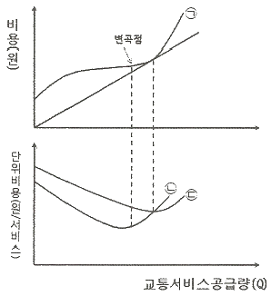
- ㉠ : 총비용, ㉡ : 한계비용, ㉢ : 평균비용
- ㉠ : 총비용, ㉡ : 평균비용, ㉢ : 한계비용
- ㉠ : 평균비용, ㉡ : 총비용, ㉢ : 한계비용
- ㉠ : 평균비용, ㉡ : 한계비용, ㉢ : 총비용
(정답률: 94%)
2과목: 교통공학
21. 다음 중 고속도로 엇갈림구간(Weaving Area)의 교통특성에 영향을 미치는 도로 기하구조 요소에 해당하지 않는 것은?
- 엇갈림구간의 길이
- 엇갈림구간의 형태
- 엇갈림구간의 폭(차로수)
- 엇갈림구간의 설계속도
(정답률: 73%)
22. 어느 교통류는 속도와 밀도가 u=40.0-0.25k의 관계를 가진다. 이 교통류의 임계밀도, 임계속도, 용량은 얼마인가?
- 임계밀도 : 70 vpk, 임계속도 : 20 kph, 용량 : 1400 vph
- 임계밀도 : 80 vpk, 임계속도 : 20 kph, 용량 : 1600 vph
- 임계밀도 : 70 vpk, 임계속도 : 25 kph, 용량 : 1750 vph
- 임계밀도 : 80 vpk, 임계속도 : 25 kph, 용량 : 2000 vph
(정답률: 77%)
23. 다음 중에서 일방통행제의 단점인 것은?
- 사고증가
- 주행거리의 증가
- 상충이동류 증가
- 신호시간 조절의 어려움
(정답률: 98%)
24. 도시부 2차로 국도에서 평균지점속도조사를 계획하고자 한다. 95% 신뢰수준에서 허용오차를 2km/h가 되게 할 때 필요한 표본수는? (단, 도시부 2차로 국도에서 지점속도의 표준편차는 7.7km/h, 95% 신뢰수준 계수 값은 1.96으로 한다.)
- 52대
- 57대
- 62대
- 67대
(정답률: 72%)
25. 다음 중 감응식 신호에 대한 설명이 옳지 않은 것은?
- 정주기식 신호보다 주변 교차로와의 연동이 용이하다.
- 경우에 따라 도착 교통이 없는 현시는 생략될 수도 있다.
- 완전감응식과 반감응식이 있다.
- 일반적으로 교통량의 변동이 심한 독립교차로에서 사용하면 차량의 지체를 줄여주는 효과가 있다.
(정답률: 93%)
26. 어느 신호교차로에서 다음 표와 같이 15분 간격으로 두 시간 동안 교통량 조사를 실시하였다. 이 신호교차로의 첨두시간계수(PHF)는?
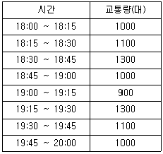
- 0.83
- 0.85
- 0.87
- 0.90
(정답률: 69%)
27. 기종점 조사의 분석결과에 대한 정확성 검토를 위하여 일반적으로 많이 사용되는 조사방법은?
- 폐쇄선 조사
- 스크린라인 조사
- 교차로 조사
- 간선도로 조사
(정답률: 88%)
28. 외부로부터의 자극에 대한 운전자의 반응에 관한 PIEV이론에서 I에 해당하는 것은?
- 식별
- 감지
- 판단
- 반응
(정답률: 86%)
29. 다음 중 나머지 세 가지와 의미가 다른 하나는?
- PIEV시간
- 공주시간
- 지각반응시간
- 행동판단시간
(정답률: 60%)
30. 20/20의 시력을 가진 운전자가 80m의 거리에서 글자의 크기가 15cm인 교통표지판을 읽을 수 있다면 20/50의 시력을 가진 운전자가 글자크기가 동일한 표지판을 읽기 위해 필요한 거리는?
- 16m
- 32m
- 40m
- 48m
(정답률: 85%)
31. 3km의 도로구간을 주행한 차량 3대의 주행속도와 시간이 아래와 같을 때, 3대의 공간평균속도는 얼마인가?
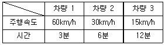
- 25.7km/h
- 28.3km/h
- 33.5km/h
- 35.0km/h
(정답률: 59%)
32. 도로의 한 지점에서 루프검지기를 사용하면 밀도를 직접 측정할 수 없다. 이를 대신하기 위하여 측정하는 변수는?
- 차간간격(Gap)
- 포화도비
- 차두간격(Headway)
- 점유율(Occupancy)
(정답률: 71%)
33. 신호교차로에서 주기를 결정할 때 고려해야 할 요소가 아닌 것은?
- 밀도
- 교통량
- 보행자 횡단시간
- 첨두시간계수
(정답률: 65%)
34. 다음 중 지점속도(spot speed)의 조사를 통하여 분석할 수 없는 것은?
- 제한속도의 설정
- 교통표지판 위치설정
- 사고와 속도의 관계분석
- 구간 교통정체 평가분석
(정답률: 65%)
35. 다음의 교통신호와 관련된 용어에 대한 설명으로 옳지 않은 것은?
- 신호주기 : 교차로 신호등에서 녹색 신호가 켜진 후 다시 녹색 신호가 켜지기까지의 시간
- 현시 : 교차로에서 동시에 통행할 수 있도록 각 방향 교통류에 부여되는 통행권
- 분할비 : 한 현시내에서 유효 녹색시간이 차지하는 비율
- 출발지체시간 : 신호가 적색에서 녹색으로 바뀐 후 첫 번째 차량이 교차로를 통과하기까지의 손실시간
(정답률: 75%)
36. 주기가 100초이며 4현시로 운영되는 신호교차로가 있다. 동서도로의 직진 및 좌회전의 황색신호 3.0초, 남북도로의 직진 및 좌회전의 황색신호는 4.0초이다. 이 교차로의 한시간당 유효녹색시간은 얼마인가? (단, 모든 도로의 출발지연시간 0.2초, 소거손실시간 0.1초이다.)
- 2980.8초
- 3009.6초
- 3⑤2.8초
- 3124.8초
(정답률: 36%)
37. 도로교통용량 산정의 변수 중 중차량 보정계수공식으로 맞는 것은? (단, Pt : 화물차의 구성비율, Pb : 버스의 구성비율, Et : 화물차의 승용차 환산계수, Eb : 버스의 승용차 환산계수)
- 1/[1+Pt(Et-1)+Pb(Eb-1)]
- 1/[Pt(Et-1)+Pb(Eb-1)]
- 1/[Pt(Et-1)+Pb(Eb-1)-1]
- 1/[1+Pt(Et-1)*Pb(Eb-1)]
(정답률: 86%)
38. 고속도로 기본구간의 이상적인 조건에 해당하지 않는 것은?
- 승용차로만 구성된 교통류
- 차로폭 3.5m 이상
- 측방여유폭 1m 이상
- 평지
(정답률: 93%)
39. 다음 중 교통량(q), 교통밀도(k), 공간평균속도(v)의 관계식으로 옳은 것은?
- q=v/k
- q=k×v
- q=k/v
- v=(k×q)2
(정답률: 94%)
40. 다음 중 대기행렬이론에서의 단일 서비스시스템에 대한 설명으로 옳지 않은 것은?
- 시스템 내의 평균차량대수는 서비스를 받고 있는 평균차량대수의 값과 같다.
- 평균대기행렬 길이는 시스템 내의 평균차량대수에서 서비스를 받고 있는 차량의 평균대수를 뺀 값이다.
- 시스템 내에 차량이 한 대도 없을 확률은 (1-ρ)(ρ = 교통강도 또는 이용계수)와 같다.
- 시스템 내의 평균체류시간은 평균대기시간과 평균서비스 시간을 합한 값과 같다.
(정답률: 72%)
3과목: 교통시설
41. 평면교차로에서 좌회전 차로를 설치하고자 할 때 차로 테이퍼에 관한 설명으로 옳지 않은 것은?
- 차로 테이퍼는 좌회전 교통류를 직진차로에서 좌회전 차로로 유도하는 기능을 갖는다.
- 테이퍼 설치시에는 좌회전 차량이 좌회전 차로로 진입할 때 갑작스러운 차로변경을 유발하지 않도록 하여야 한다.
- 테이퍼 설치시에는 좌회전 차량이 좌회전 차로로 진입할 때 무리한 감속을 유발하지 않도록 하여야 한다.
- 가급적 테이퍼를 완만하게 하여 운전자들이 직진차로와의 차이를 느끼지 않도록 하여야 한다.
(정답률: 89%)
42. 등화를 횡으로 배열한 4색 신호등의 배열순서는?
- 좌로부터 적색, 황색, 녹색, 녹색화살표
- 좌로부터 적색, 황색, 녹색화살표, 녹색
- 우로부터 적색, 황색, 녹색, 녹색화살표
- 우로부터 적색, 황색, 녹색화살표, 녹색
(정답률: 95%)
43. 다음은 비상주차대의 설치위치에 대한 내용이다. ( )에 들어갈 내용을 순서대로 나열한 것은?
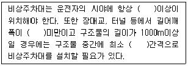
- 1개소, 2.0m, 750m
- 1개소, 2.0m, 500m
- 1개소, 1.5m, 750m
- 2개소, 1.5m, 500m
(정답률: 78%)
44. 클로버형 인터체인지의 특징으로 볼 수 없는 것은?
- 소수의 교차상충이 발생한다.
- 각 직진도로는 인터체인지 지역 내에서 두 개의 입구와 두 개의 출구를 가진다.
- 운행거리 및 운행비용이 커진다.
- 교차점 직전의 출구와 교차점 직후의 입구 사이에 엇갈림 구간이 생긴다.
(정답률: 79%)
45. 도로의 차로수를 결정하는 요인으로 옳지 않은 것은?
- 설계시간교통량
- 교통량의 방향별 분포
- 설계속도
- 첨두시간계수
(정답률: 73%)
46. 도로의 횡단구성 요소 중 차도부에 해당하지 않는 것은 무엇인가?
- 길어깨
- 중앙분리대
- 측대
- 자전거도
(정답률: 81%)
47. 버스의 운행정보가 아래와 같을 때, 다음 중 최적재차인원에 의한 버스 정류장의 적정 간격은?
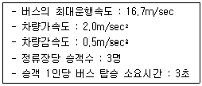
- 947.5m
- 847.5m
- 747.5m
- 647.5m
(정답률: 60%)
48. 도로의 표시에서 황색실선에 대한 설명 중 옳지 않은 것은?
- 이 선을 통과할 수 없다.
- 추우러 시 교통에 지장이 없으면 통과할 수 있다.
- 중앙분리선을 나타낼 때 쓰는 형태이다.
- 너비는 15cm ~ 20cm 이다.
(정답률: 79%)
49. 도로의 설계속도에 따른 차도의 최소 평면곡선반지름으로 옳은 것은? (단, 편경사가 6%인 경우이다.)
- 설계속도 120 km/h, 최소평면곡선반지름 640m
- 설계속도 100 km/h, 최소평면곡선반지름 460m
- 설계속도 80 km/h, 최소평면곡선반지름 380m
- 설계속도 60 km/h, 최소평면곡선반지름 200m
(정답률: 71%)
50. 다음 중 평면교차로 설계의 기본원리로 옳지 않은 것은?
- 엇갈림 교차나 굴절교차 등의 변형교차는 피해야 한다.
- 교차로의 면적은 너무 넓지 않게 가능한 한 최소로 한다.
- 상충이 발생하는 교통류간의 상대속도를 크게 한다.
- 교통 특성이 서로 다른 교통류는 분리시켜야 한다.
(정답률: 90%)
51. 설계속도가 80km/h인 평지도로에서 노면과 타이어의 종방향 마찰계수가 0.27일 때, 최소정지시거는? (단, 운전자 반응시간은 2.5초 이다.)
- 66m
- 93m
- 107m
- 149m
(정답률: 60%)
52. 휴게시설을 설치할 때, 모든 휴게시설 상호간의 표준 배치간격은?
- 10km
- 15km
- 25km
- 30km
(정답률: 69%)
53. 평면교차로의 종류가 아닌 것은?
- Y형 교차로
- T형 교차로
- 회전 교차로
- 다이아몬드형 교차로
(정답률: 98%)
54. 다음 중 자전거도로에 대한 설명으로 옳지 않은 것은?
- 자전거도로는 자전거전용도로, 자전거ㆍ보행자 겸용도로, 자전거ㆍ자동차 겸용도로 등으로 구분된다.
- 자전거와 보행자의 분리 판단기준은 자전거교통량이 80대/시(약 700대/일)이다.
- 자전거도로의 포장면은 교차로와의 사이에 턱이 없게 설치하고, 접속 경사는 13% 이상이 되도록 설치한다.
- 자전거ㆍ자동차 겸용도로는 자전거 외에 자동차도 일시 통행할 수 있도록 차도에 노면표시로 구분하여 설치된 자전거도로이다.
(정답률: 89%)
55. 어느 주차장의 주차첨두시간 동안의 주차수요는 98대, 평균주차시간은 1.32시간으로 추정된다. 주차첨두시간의 평균점유율을 0.85로 할 때 소요 주차면수는? (단, 주차첨두시간은 11:00 ~ 14:00 이다.)
- 41면
- 45면
- 48면
- 51면
(정답률: 52%)
56. 비신호 교차로의 경우 좌회전 차로의 대기차량을 위한 길이의 기준으로 옳은 것은?
- 첨두시간 평균 1분간 도착하는 좌회전 교통량
- 첨두시간 평균 2분간 도착하는 좌회전 교통량
- 첨두시간 평균 3분간 도착하는 좌회전 교통량
- 첨두시간 평균 5분간 도착하는 좌회전 교통량
(정답률: 75%)
57. 다음 중 입체교차의 연결로 설계 시 유출입 유형을 일관성 있게 계획할 때의 장점으로 가장 거리가 먼 것은?
- 차로변경을 줄인다.
- 직진교통과의 마찰을 줄인다.
- 과속운전을 줄인다.
- 운전자의 혼란을 줄인다.
(정답률: 86%)
58. 다음 중 도로의 최소 곡선반경(R)을 구하는 식으로 바른 것은? (단, f=마찰계수, e=편경사, V=설계속도)
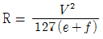
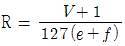
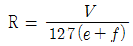
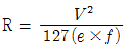
(정답률: 88%)
59. 다음 중 도로설계시 환경시설대의 설치기준에 맞는 것은?
- 일반평면도로에서는 도로의 양측 차도 끝에서 폭 15m의 환경시설대를 설치한다.
- 고가도로에서는 환경시설대를 설치하지 아니한다.
- 자동차전용도로에서는 도로의 양측 차도 끝에서 폭 20m의 환경시설대를 설치한다.
- 도로 주변 건축물이 높게 지어져 차음효과가 있거나, 지가가 높은 경우 환경시설대의 폭을 5m 정도로 축소할 수 있다.
(정답률: 70%)
60. 도시고속도로의 중앙분리대 설치 시 최소 폭은?
- 1.5m
- 2.0m
- 2.5m
- 3.0m
(정답률: 85%)
4과목: 도시계획개론
61. 다음 중 근린주구를 물리적 계획의 기본단위로 하여 주구 내의 생활안정을 유지하고 편리성과 쾌적성을 확보하기 위한 6가지 계획원리를 제시한 사람은?
- 하워드(E. Howard)
- 페리(C.A. Perry)
- 르꼬르뷔제(Le Corbusier)
- 랑팡(P.C. L'Enfant)
(정답률: 72%)
62. 다음 중 보행자전용도로에 대한 설명으로 옳지 않은 것은?
- 보행자의 안전과 자동차의 원활한 주행을 도모하기 위해서 보행자만의 교통에 제공되는 도로를 말한다.
- 보행자전용도로를 통하여 보행자를 자동차의 소음과 배기가스 등에서 보호할 수 있다.
- 보행자전용도로는 주거단지 내에서 발생하는 각종 생활동선의 수요를 충족시킨다.
- 보행자전용도로는 일반 도로를 통하여 인식되는 도시구조와 질서를 약화시킨다.
(정답률: 79%)
63. 다음 중 도시의 확산현상과 가장 관계가 먼 것은?
- 토지 지가의 상승 현상
- 주택 수요증가
- 도심의 개발한계
- 토지의 입체적 고밀도 이용
(정답률: 63%)
64. 현재 인구 150만의 도시가 있다. 연평균 증가율이 4% 일 때, 등차급수에 의한 5년 후의 추정인구는?
- 156만명
- 172만명
- 180만명
- 206만명
(정답률: 72%)
65. 다음 중 공동구의 설치 목적과 거리가 먼 것은?
- 도시미관의 보호
- 방재능률의 향상
- 수자원의 보호
- 도로교통의 원활화
(정답률: 72%)
66. 다음의 도시계획역사에 관한 서술 중 사실과 가장 다른 것은?
- 하워드의 전원도시 계획안은 방사환상형의 시가지 패턴을 가지고 있다.
- 하워드의 전원도시 개념은 후에 근린주구이론에 밑거름이 된다.
- 위성도시의 개념은 중심도시로부터 지리적으로 분리되고 경제적으로 연결된 독립도시이다.
- 도시미화운동은 유럽의 도시계획에 가장 많은 영향을 미쳤고 문화적이고 예술적이며 환경적인 도시개발 운동이다.
(정답률: 57%)
67. 다음 중 지역의 경제활동 예측모형인 경제기반모형에 대한 설명으로 옳은 것은?
- 지역의 산업은 기반부문과 비기반부문으로 구성되며 기반부문은 수입산업, 비기반부문은 수출산업으로 분류한다.
- 경제성장요인을 체계적으로 분류하여 성장요인이 지역경제에 미치는 영향을 분석한다.
- 입자계수(LQ)가 1인 산업의 생산품이나 서비스는 지역의 수요만을 충당하는 사업으로 볼 수 있다.
- 어떤 산업의 생산량은 다른 산업을 위한 상품과 최종 소비하는 생산물의 합과 동일하다.
(정답률: 60%)
68. 다음 중 국토의 계획 및 이용에 관한 법률상 원칙적으로 관할 구역에 대한 도시ㆍ군기본계획의 수립권자는?
- 특별시장ㆍ광역시장ㆍ특별자치시장ㆍ특별자치도지사ㆍ시장 또는 군수
- 국토교통부장관
- 중앙도시계획위원회
- 지방의회
(정답률: 71%)
69. 다음은 일반적인 계획과정의 행위 목록이다. 계획과정을 계획단계별로 올바르게 열거한 것은?
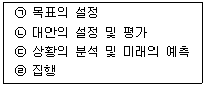
- ㉠-㉡-㉢-㉣
- ㉠-㉢-㉡-㉣
- ㉢-㉠-㉡-㉣
- ㉢-㉡-㉠-㉣
(정답률: 59%)
70. 다음의 도로의 기능 분류에서 근린주구생활권의 골격을 형성하는 도로는?
- 간선도로
- 보조간선도로
- 집산도로
- 국지도로
(정답률: 44%)
71. 다음 중 도시ㆍ군계획시설의 결정ㆍ구조 및 설치기준에 관한 규칙에 따른 교통시설로서 도로의 종류에 대한 설명으로 옳지 않은 것은?
- 도로의 규모별 구분으로서 고속국도, 일반국도, 특별시도ㆍ광역시도, 지방도, 시도, 군도, 구도가 있다.
- 도로의 사용 및 형태별 구분으로서 일반도로, 자동차전용도로, 보행자전용도로, 보행자우선도로, 자전거전용도로, 고가도로, 지하도로가 있다.
- 특수도로는 보행자전용도로ㆍ자전거전용도로 등 자동차 외의 교통에 전용되는 도로를 의미한다.
- 도로의 기능과 규모별 구분은 도로의 체계를 구성하는데 밀접하게 연관되어 있으며 높은 위계의 도로에 대해서는 큰 규모의 도로가 지정된다.
(정답률: 71%)
72. 다음 중 도시ㆍ군관리계획으로 반드시 결정할 사항과 가장 거리가 먼 것은?
- 개발제한구역 또는 시가화조정구역 지정에 관한 계획
- 도시개발사업 또는 정비사업에 관한 계획
- 지구단위계획구역의 지정 또는 변경에 관한 계획과 지구단위계획
- 환경의 보전 및 관리에 관한 계획
(정답률: 64%)
73. 다음 중 도시계획 과정에서의 주민참여에 대한 설명으로 옳지 않은 것은?
- 도시계획의 입안 및 집행에 지역주민이 직접ㆍ간접적으로 참여할 수 있다.
- 폐쇄적인 계획의 추진에서 발생하기 쉬운 오류와 저항을 사전에 예방할 수 있다.
- 주민참여는 개발에 의한 이익을 균등 배분하기 위함이다.
- 주민의 의사와 욕구를 개발목표에 맞추어 구체화시킴으로써 도시행정의 능률적인 수행을 도모할 수 있다.
(정답률: 77%)
74. 광역도시계획의 내용과 가장 거리가 먼 것은?
- 광역계획권의 공간적 범위와 개발에 관한 사항
- 광역계획권의 녹지관리체계와 환경보전에 관한 사항
- 광역시설의 배치ㆍ규모ㆍ설치에 관한 사항
- 광역계획권의 문화ㆍ여가공간 및 방재에 관한 사항
(정답률: 36%)
75. 다음 중 도시교통의 특성과 거리가 먼 내용은?
- 통행목적을 달성하기 위해 도시 간을 연결해 주는 중장거리 교통이다.
- 대중교통육성 등을 통한 대량 수송을 필요로 한다.
- 하루 중 오전과 오후 2회에 걸쳐 첨두현상이 발생한다.
- 도심지와 같은 특정지역에 통행이 집중된다.
(정답률: 67%)
76. 다음 중 국토의 계획 및 이용에 관한 법률상 도시지역과 그 주변지역의 무질서한 시가화를 방지하고, 계획적ㆍ단계적인 개발을 도모할 필요가 있다고 인정되어 도시ㆍ군관리계획으로 결정하는 구역은?
- 개발제한구역
- 특정시설제한구역
- 시가화조정구역
- 지구단위계획구역
(정답률: 75%)
77. 도시의 공간구조론 중 동심원 이론을 발표한 학자는?
- H. Hoyt
- E.W. Burgess
- R.E. Dicknson
- C.D. Harris
(정답률: 77%)
78. 용도지구에서 고도지구를 지정하는 이유는?
- 건폐율의 규제
- 건축물의 높이제한
- 건축물의 용도제한
- 상업 및 업무지구 조성
(정답률: 68%)
79. 환지방식에 의한 도시개발사업을 시행할 경우, 일정한 토지를 환지로 정하지 아니하고 보류지로 정하여 그 중 일부를 체비지로 정하는 가장 직접적인 목적은?
- 공공시설 용지를 확보하기 위하여
- 사업에 필요한 경비를 충당하기 위하여
- 생활환경을 위한 공지확보를 위하여
- 장래의 토지수요에 적응할 수 있는 토지확보를 위하여
(정답률: 79%)
80. 토지이용계획에 있어서 순밀도에 대한 설명으로 맞는 것은?
- 거주인구/주택부지
- 거주인구/(택지+공공, 공익시설용지)
- 거주인구/(택지+공공, 공익시설용지+농림지)
- 거주인구/지구총면적
(정답률: 84%)
5과목: 교통관계법규
81. 주차장법에 따른 기계식주차장치의 안전기준으로 틀린 것은?
- 기계식주차장치 출입구의 크기는 대형 기계식주차장의 경우 너비 2.4m 이상, 높이 1.9m 이상으로 하여야 한다.
- 주차구획의 크기는 대형 기계식주차장의 경우에는 너비 2.3m 이상, 높이 1.9m 이상, 길이 5.3m 이사으로 하여야 한다.
- 운반기의 크기는 자동차가 들어가는 바닥의 너비를 대형 기계식주차장의 경우 1.95m 이상으로 하여야 한다.
- 기계식주차장치 안에서 자동차를 입출고하는 사람이 출입하는 통로의 너비는 0.5m 이상, 높이는 1.6m 이상으로 하여야 한다.
(정답률: 63%)
82. 도시교통정비 기본계획을 수립할 때 주차장의 건설 및 운영에 관한 계획에 포함될 사항이 아닌 것은?
- 주차시설 및 주차실태의 조사ㆍ분석
- 주차수요예측 및 공급계획
- 주차장 설계방안
- 주차관리 정책방향
(정답률: 43%)
83. 주차장법령상 “주차전용건축물”이라 함은 건축물의 연면적 중 주차장으로 사용되는 부분의 비율 기준이 얼마 이상인 것을 말하는가?
- 80% 이상
- 85% 이상
- 90% 이상
- 95% 이상
(정답률: 80%)
84. 도로굴착에 관한 사항을 심의ㆍ조정하기 위하여 설치하는 도로관리심의회에 대한 설명 중 틀린 것은?
- 고속국도와 일반국도에만 설치한다.
- 도로굴착공사의 시행에 따른 도로시설의 안전대책을 심의ㆍ조정한다.
- 주요 지하매설물의 안전대책을 심의ㆍ조정한다.
- 일반국도의 위원장은 지방국토관리청장이 된다.
(정답률: 68%)
85. 도시교통정비촉진법에 의한 연차별 시행계획에 포함되지 않는 것은?
- 교통안전시설의 확충계획
- 교차로의 평면화계획
- 역세권 주차장 등 환승시설의 확충
- 대중교통운행체계의 개선
(정답률: 64%)
86. 다음 중 주차금지 장소의 기준으로 옳은 것은?
- 소화용 방화물통으로부터 5m 이내의 곳
- 화재경보기로부터 5m 이내의 곳
- 소방용 기계ㆍ기구가 설치된 곳으로부터 3m 이내의 곳
- 도로공사를 하고 있는 경우에는 그 공사구역의 양쪽 가장자리로부터 3m 이내의 곳
(정답률: 67%)
87. 다음 중 국토교통부장관이 도시교통정비지역으로 지정ㆍ고시할 수 있는 대상 지역 기준은?
- 인구 50만명 이상의 도시
- 인구 25만명 이상의 도시
- 인구 20만명 이상의 도시
- 인구 10만명 이상의 도시
(정답률: 79%)
88. 국토교통부장관은 복합환승센터의 체계적인 개발을 촉진하기 위하여 복합환승센터 개발 기본계획을 국가교통위원회의 심의를 거쳐 수립하여야 하는데 이때 수립주기로 옳은 것은?
- 3년
- 5년
- 10년
- 20년
(정답률: 67%)
89. 부설주차장의 설치대상 시설물이 숙박시설인 경우 부설주차장 설치기준은?
- 시설면적 100m2 당 1대
- 시설면적 150m2 당 1대
- 시설면적 200m2 당 1대
- 시설면적 300m2 당 1대
(정답률: 60%)
90. 복합환승센터 개발계획의 평가지표가 아닌 것은?
- 교통수단 이용객 수
- 연계교통망 수준
- 환승 편의시설 계획 수준
- 지방자치단체의 추진의지
(정답률: 78%)
91. 다음 중 도로를 횡단하는 보행자나 통행하는 차마의 안전을 위하여 안전표지나 이와 비슷한 인공구조물로 표시한 도로의 부분을 뜻하는 용어는?
- 보도
- 횡단보도
- 안전지대
- 길가장자리구역
(정답률: 66%)
92. 도로관리청은 그 소관 도로의 장기적인 정비방향을 제시하는 도로정비 기본계획을 몇 년 단위로 수립하여야 하는가?
- 5년
- 10년
- 15년
- 20년
(정답률: 35%)
93. 다음 중 도로법에 따른 “도로의 부속물”에 해당하지 않는 것은?
- 교량 및 터널
- 지하도 또는 육교
- 도로의 방호울타리
- 도로표지 및 도로원표
(정답률: 82%)
94. 운행상의 안전기준 중 화물차의 적재용량에 관한 설명으로 틀린 것은?
- 길이는 자동차의 길이의 1/10을 더한 길이 이내
- 너비는 자동차의 후사경으로 뒤쪽을 확인할 수 있는 범위
- 중량은 적재용량의 120% 이내
- 높이는 지상으로부터 4.0m의 높이 이내
(정답률: 77%)
95. 공공기관의 장이 소관 업무를 수행하기 위해 국가통합교통체계효율화법에서 규정한 교통조사를 시행할 때, 국토교통부 장관에게 통보하여야 하는 날은 조사 완료 후 며칠 이내인가?
- 15일 이내
- 30일 이내
- 45일 이내
- 60일 이내
(정답률: 78%)
96. 도로교통법상 교통안전 표지 중 어린이 보호표지는 어린이 보호지점 또는 구역의 어느 정도 전에 설치하도록 규정하고 있는가?
- 20~50m
- 30~50m
- 50~100m
- 50~200m
(정답률: 75%)
97. 주의표지 중 교차로표지의 설치 기준에 대한 설명으로 옳은 것은?
- 도로에서 속도를 낼 수 없는 교차로에 설치하여야 한다.
- 주행속도가 높은 구간에는 적당한 간격으로 중복 설치하여야 한다.
- 교차로 전 30미터 내지 120미터에 설치하여야 한다.
- 차량 진행방향의 도로 중앙에 설치하는 것을 원칙으로 한다.
(정답률: 55%)
98. 다음 빈칸에 들어갈 말로 옳은 것은?
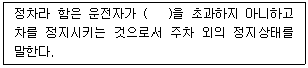
- 1분
- 3분
- 5분
- 10분
(정답률: 83%)
99. 도로교통법에서 정의하고 있는 고속도로의 개념으로 옳은 것은?
- 통행료를 지불해야 다닐 수 있는 도로
- 승합, 승용 및 원동기장치 자전거만 다닐 수 있는 도로
- 자동차의 고속 운행에만 사용하기 위하여 지정된 도로
- 주행속도의 제한이 없는 도로
(정답률: 92%)
100. 도로교통법상 자동차의 안전거리란?
- 앞 차를 안전하게 추월할 수 있는 거리
- 앞 차가 갑자기 정지할 때 충돌을 피할 수 있는 거리
- 앞 차의 진행방향을 확인할 수 있는 거리
- 앞 차와 뒷 차 사이에 끼어들 수 없는 거리
(정답률: 84%)
6과목: 교통안전
101. 다음의 교통안전대책 중 안전과 이동성이 상충되는 것은?
- 안전띠
- 충격흡수식 지주
- 과속방지턱
- ABS
(정답률: 90%)
102. 교통사고 유발요인의 분류와 이에 속하는 요인이 잘못 짝지어진 것은?
- 인적요인 - 운전자의 적성 또는 운전습관
- 도로요인 - 도로폭 또는 종단경사
- 차량요인 - 차량구조장치 또는 부속품
- 환경요인 - 음주 또는 약물 복용
(정답률: 94%)
103. 교통사고의 노출도(Exposure rate)를 설명하는 변수로 일반적으로 활용되지 않는 것은?
- 교통량
- 학생수
- 도로연장
- 인구
(정답률: 95%)
104. 도로표지의 설치장소 선택 시 고려할 내용으로 가장 거리가 먼 것은?
- 도로 이용자의 행동특성을 고려하여야 한다.
- 도로 이용자가 충분히 읽을 수 있도록 시야가 좋은 곳에 설치하여야 한다.
- 도로점유율에 의해 도로표지의 시인성이 방해받지 않는 곳에 설치하여야 한다.
- 장래 교통량이 많을 것으로 예상되는 지점에 우선 설치하여야 한다.
(정답률: 95%)
1⑤. OECD가 요약한 교통안전의 진보단계 중 “모든 사고에 있어 특정 사건은 부분적으로 그에 앞선 행동 또는 환경의 결과다.”라는 전제하에 도로외상을 유발하는 과정을 통하여 결정적인 선 또는 경로를 찾는 방법을 개발하고자 한 것은?
- 다원인 동적 체계접근
- 다원인 정적 체계접근
- 다원인 기회현상 접근
- 단일원인 사고경향 접근
(정답률: 92%)
106. 교통안전 전략으로써 노출통제에 해당하는 것은?
- 재택근무
- 운전자교육
- 가로 조명 증설
- 속도 제한
(정답률: 84%)
107. 승용차가 3% 경사의 오르막길에서 급제동하였더니 제동거리 20m로 정차하였다. 이 차량의 급제동 직전의 속도는 약 얼마인가?(단, 노면과 타이어간의 마찰계수는 0.7 이다.)
- 61km/h
- 73km/h
- 82km/h
- 98km/h
(정답률: 49%)
108. 어느 차량이 급정지할 때 운전자의 핸들 조향에 의해 측방으로 쏠리면서 도로 위에 미끄러져 요마크(Yawmark)를 형성하였다. 도로는 평지이고 타이어와 노면의 횡방향 마찰계수는 0.3, 요마크의 곡선반경이 100m 일 때, 차량이 미끄러질 때의 속도는 약 얼마인가?
- 62km/h
- 72km/h
- 82km/h
- 92km/h
(정답률: 60%)
109. 노변방호책의 설계시 고려사항이 아닌 것은?
- 차량의 경로나 정지한 지점이 인접 차선을 참범하여도 상관 없다.
- 형태를 유지하면서 차량의 감속을 최대한 유도하여야 한다.
- 차량이 관통하거나 튀어오르지 않고 차량의 방향을 수정해야 한다.
- 차량이 걸려 전도하거나 급격한 감속, 튕겨나감, 구름을 일으키지 않아야 한다.
(정답률: 91%)
110. 도로안전진단(Road Safety Audit)에 대한 설명이 틀린 것은?
- 도로의 설계 및 건설단계에서 도로사업의 안전성을 평가하여 잠재적 위험요인을 찾아내고 이를 제거하거나 완화하기 위해 실시되고 있다.
- 도로안전진단의 주체는 도로의 계획, 설계 및 운영과 관련이 없는 독립적인 사람이어야 한다.
- 도로안전진단제도는 미국에서 처음 시작되었다.
- 계획, 시공, 운영 단계까지 모든 단계에 적용될 수 있다.
(정답률: 85%)
111. 위험지점의 선정 방법 중 사고율법(Accident Rate Method)의 적용에 필요하지 않은 자료는?
- 기간
- 구간거리
- 교통량
- 도로의 유형
(정답률: 66%)
112. 사고지점도에 관한 설명으로 틀린 것은?
- 사고가 집중적으로 발생하는 지점의 신속한 시각적 색인을 제공한다.
- 사고건수 대신 사상자수를 나타내는 것이 일반적이다.
- 범례는 가능한 한 단순해야 한다.
- 지도상에 핀, 색종이를 붙이거나 표시하여 사고지점을 나타낸다.
(정답률: 79%)
113. 구간거리가 12km이고 편도 4차로인 고속도로에서 1년간 사망사고 3건, 부상사고 12건, 대물피해사고가 20건이 발생하였다. 이 구간의 일평균교통량이 20000대일 때 교통사고 피해정도에 의한 사고율은 얼마인가? (단, 사고 유형별 환산계수는 사망사고 = 20, 부상사고 = 5, 대물피해사고 = 1 로 한다.)
- 약 0.77
- 약 1.60
- 약 3.09
- 약 6.18
(정답률: 56%)
114. 교통안전개선사업에 대한 사후 평가의 목적으로 가장 거리가 먼 것은?
- 개선사업 시행 후 사고 가능성이 높아지는 경우 이에 대해 신속한 조치를 취하기 위해 실시한다.
- 개선사업에 따라 얼마나 많은 통행 교통량의 변화를 유발할 수 있는지를 추측하기 위해 실시한다.
- 개선사업의 효과가 시간의 변화에 따라 안정적인지의 여부를 파악하기 위해 실시한다.
- 개선사업의 초기에 설정한 목적을 달성하고 있는지를 평가하기 위해 실시한다.
(정답률: 84%)
115. 운전자들에게 필요한 정보를 올바른 방법으로 제공하여 운전자들이 충돌을 피할 수 있게 해야 한다는 개념의 Positive Guidance의 주요 고려 개념 중 하나인 운전자의 기대심리에 대한 설명이 틀린 것은?
- 차가 계속 일정한 속도로 움직일 것이라는 계속성의 기대
- 과거에 일어나지 않은 일은 계속 일어나지 않을 것이라는 기대
- 일시적, 간헐적으로 어떤 사건이 일어날 것이라는 기대
- 어떠한 상황에서든 과거로 회귀한다는 기대
(정답률: 88%)
116. 각 지점의 사고율을 산정하고, 그 지점의 사고율이 유사한 조건을 갖는 도로에 대한 사고율보다 현저히 높은지의 여부를 검토하기 위한 분석방법은?
- 교통사고건수법
- 통계적 교통사고율법
- 교통사고 현황판법
- 교통사고 피해정도법
(정답률: 88%)
117. 선형불량이 원인이 된 사고의 개선 대책이 아닌 것은?
- 커브예고표지설치
- 시선유도표지설치
- 도로의 재설계
- 긴급제동시설설치
(정답률: 88%)
118. 도로교통조건과 사고에 대한 설명이 틀린 것은?
- 평균일교통량(ADT)과 사고율과는 밀접한 관계가 있다.
- 교통류 내의 차종구성에서 대형 차량이 많으면 사고율이 높다.
- 일방통행도로의 사고율은 양방통행도로보다 높다.
- 차량 간의 속도 분포가 크면 사고율이 높다.
(정답률: 88%)
119. 교통사고 에방과 피해 감소를 위한 각종 대책으로 대별 되어지는 3E에 해당하지 않는 분야는?
- 공학(Engineering)
- 환경(Environment)
- 규제(Enforcement)
- 교육(Education)
(정답률: 86%)
120. 35km의 도로 구간에서 1년 동안 50건의 교통사고가 발생하였다. 일평균교통량이 6000대, 총 사고건수 중 5%가 치명적 사고이었다면 차량 1억대ㆍkm당 치명적 사고 발생률은?
- 32.6건
- 24.6건
- 2.46건
- 3.26건
(정답률: 46%)